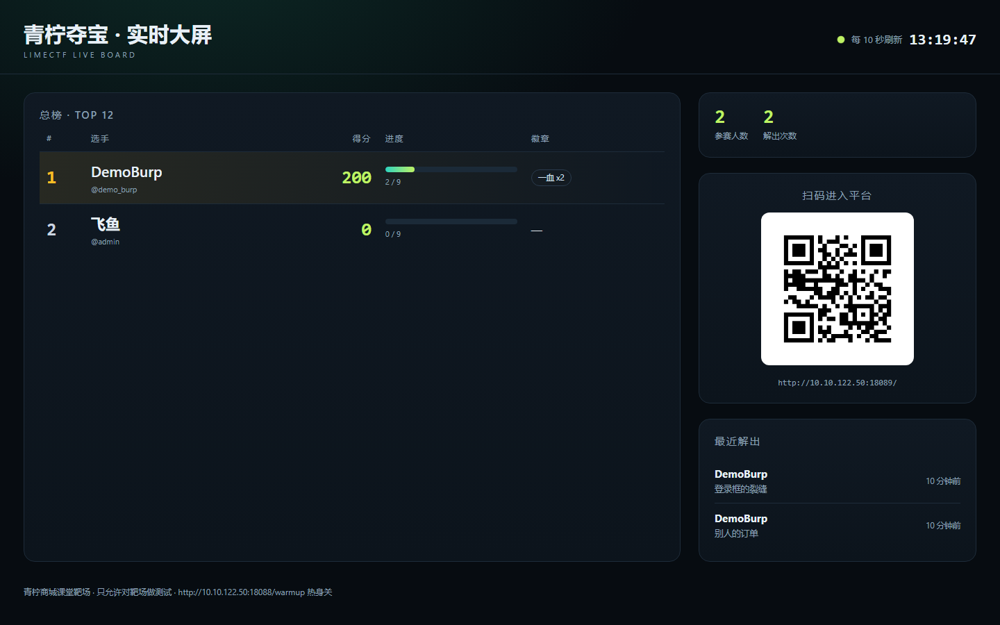
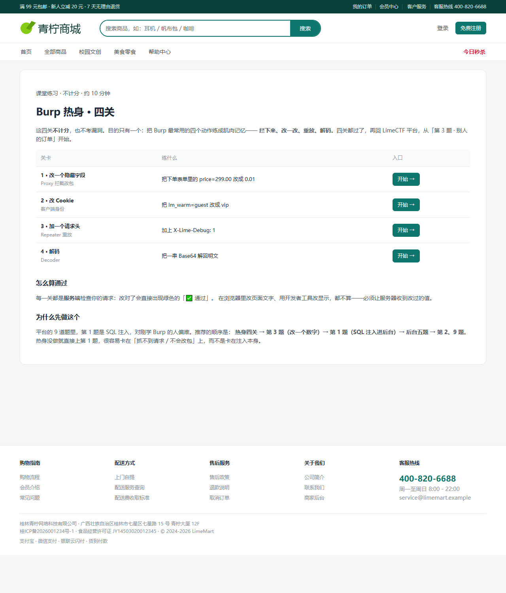
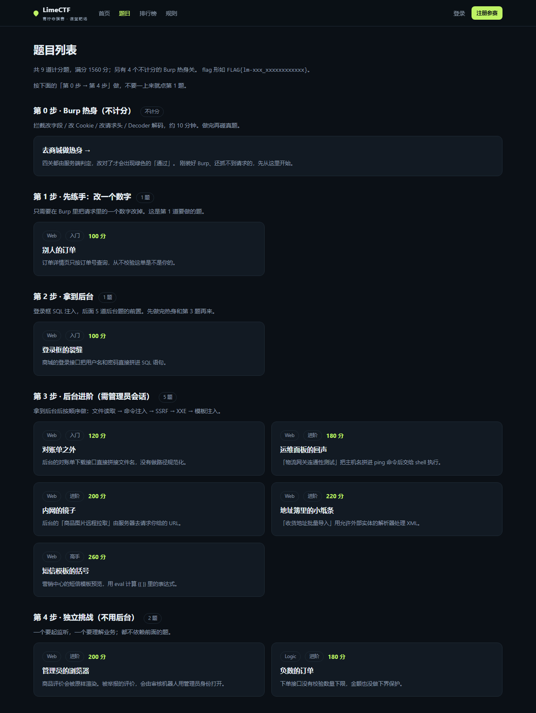
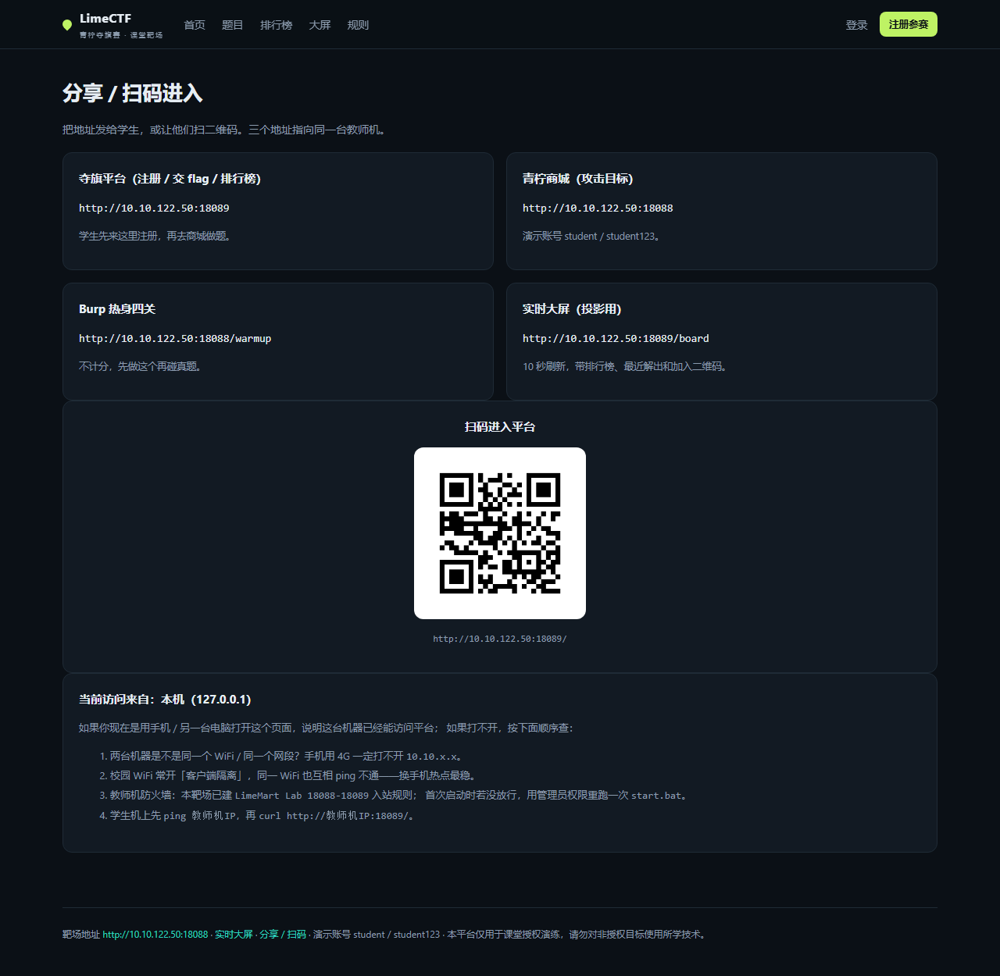

青柠商城 · Burp 入门靶场
一个故意留洞的校园电商：4 个 Burp 热身关 + 9 道 Web 题。 面向刚学 Burp Suite 的初学者，顺序是「热身 → 改一个数字 → 进后台 → 后台题」， 不按题号从第 1 题开始。
学习路径
按阶段发题，而不是按题号。第 3 题 IDOR 只改一个数字，适合作为第一道真题。
第 0 步 · Burp 热身（不计分）
不计分 · 4 关 · 约 10 分钟拦截改字段 / 改 Cookie / 改请求头 / Decoder 解码，约 10 分钟。做完再碰真题。
第 1 步 · 先练手：改一个数字
1 题只需要在 Burp 里把请求里的一个数字改掉。这是第 1 道要做的题。
别人的订单
订单详情页只按订单号查询，从不校验这单是不是你的。
目标：查看订单 LM1001 的备注，那里有一条结算签名。
第 2 步 · 拿到后台
1 题登录框 SQL 注入，后面 5 道后台题的前置。先做完热身和第 3 题再来。
登录框的裂缝
商城的登录接口把用户名和密码直接拼进 SQL 语句。
目标：绕过登录，进入商家后台，找到「平台公告」里的对账校验签名。
第 3 步 · 后台进阶（需管理员会话）
5 题拿到后台后按顺序做：文件读取 → 命令注入 → SSRF → XXE → 模板注入。
对账单之外
后台的对账单下载接口直接拼接文件名，没有做路径规范化。
目标：读出站点根目录下的 .env 配置文件。
运维面板的回声
「物流网关连通性测试」把主机名拼进 ping 命令后交给 shell 执行。
目标：执行额外的命令，读出环境变量 LM_LOGISTICS_KEY。
内网的镜子
后台的「商品图片远程拉取」由服务器去请求你给的 URL。
目标：让服务器访问它自己的内部接口 /_internal/status。
地址簿里的小纸条
「收货地址批量导入」用允许外部实体的解析器处理 XML。
目标：通过外部实体读出让服务器请求 /_internal/supplier 的内容。
短信模板的括号
营销中心的短信模板预览，用 eval 计算 {{ }} 里的表达式。
目标：执行 Python 表达式，读出环境变量 LM_SIGN_TOKEN。
第 4 步 · 独立挑战（不用后台）
2 题一个要起监听，一个要理解业务；都不依赖前面的题。
管理员的浏览器
商品评价会被原样渲染。被举报的评价，会由审核机器人用管理员身份打开。
目标：让机器人的浏览器执行你的脚本，把它的登录票据带出来。
负数的订单
下单接口没有校验数量下限，金额也没做下界保护。
目标：提交一笔金额 ≤ 0 的订单，备注里会出现活动校验签名。
热身四关（不计分）
商城 /warmup，四关都由服务端判定；改页面文字不算通过。
| 关 | 练什么 | 要改什么 | 过关标志 |
|---|---|---|---|
| 1 | 改一个隐藏字段 | Proxy 拦截，把表单里的 price=299.00 改成 0.01 | 服务端按 ¥0.01 成交 |
| 2 | 改 Cookie | 把 lm_warm=guest 改成 vip | 页面显示「热身 2 / 4 通过」 |
| 3 | 加一个请求头 | Repeater 里加 X-Lime-Debug: 1 | 返回一段调试 JSON |
| 4 | 解码 | Decoder 把 Base64 解回明文 | 回填后显示「热身 4 / 4 通过」 |
成绩快照
生成于 2026-10-22 13:47 · 共 2 位选手 · 徽章（一血 / 全清 / 阶段 / 连击）不加分
| # | 选手 | 徽章 | 得分 | 进度 | 最后解出 |
|---|---|---|---|---|---|
| 1 | DemoBurp @demo_burp | 一血 x2 | 200 | 2 / 9 | 2026-10-22 13:08:49 |
| 2 | 飞鱼 @admin | — | 0 | 0 / 9 | - |
最近解出
- DemoBurp 解出 登录框的裂缝
- DemoBurp 解出 别人的订单
现场截图
大屏、热身页、题目页（按阶段分组）。




规则
- 只允许攻击本靶场，禁止对校园网其他设备动手。
- flag 形如 FLAG{lm-xxx_xxxxxxxxxxxx}，首次提交正确才计分。
- 一血、全清、阶段通关、连击显示为徽章，不加分。
- 靶场故意不安全，禁止把其中写法抄进真实项目。